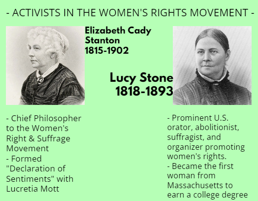
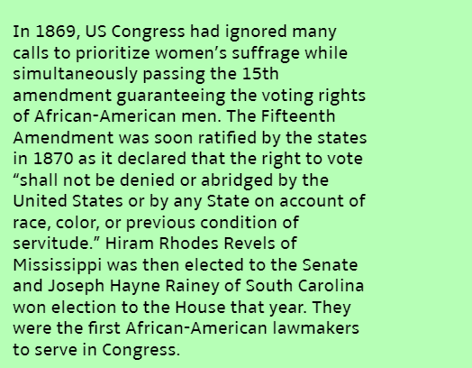

<!DOCTYPE html>
<html></html>
    <head>
        <meta charset="utf-8">
        <meta name="viewport" content="width=device-width, initial-scale=1">
    </head>
    <body style="background-color:#b6ffb6">
        <title>
            EXTRA. CREDIT. PLS.
        </title>
         <br>
        <h1> EDUCATION REFORM</h1> <br> <br>
        <h2>
            In the 1800s, women didn't have the same rights as men. Women didn't have the ability to<br>
            own property, vote, have the legal status of children, seek divorce, sign legal documents, and needed <br>
            to get permission from their husband or father to work at a job. It was believed that a woman's <br>
            primary duty in society was to stay home and raise children, which was called the Cult of Domesticity. <br>
            <br>
            Due to this, many great leaders such as Lucy Stone started the women's rights movement. <br>
            The Seneca Falls Convention in New York was then held in 1848 by Susan B. Anthony and <br>
            Elizabeth Cady Stanton, where they would later publish the Declaration of <br>
            Sentiments. In the Declaration of Sentiments, it said that women should possess the same <br>
            rights as men in order to have equal opportunity for things like jobs, property and the <br>
            right to vote, which is known as suffrage. <br>
            <br>
            Despite this powerful movement, not all women or men believed in gender equality. Women who<br>
            were in the realm of traditional gender roles argued that politics were not proper for women. <br>
            There are some that even believed that voting may cause some women to grow beards. Traditional <br>
            roles for genders being revamped upheld by the struggle for equality didn't land well with some <br>
            women and of course men as well. <br>
            <br>
             <br>
            
            <h2>
                CURRENT WOMEN'S RIGHTS MOVEMENTS TODAY <br>
                <br>
                - Women's Suffrage <br>
                - Sexual and Reproductive Rights<br>
                - Freedom of Movement<br>
                - Intersectional Feminism<br>
                - Gender Inequality<br>
                - Gender-Based Violence<br>
                - Sexual Violence and Harassment<br>
                - Workplace Discrimination<br>

            </h2>
        </h2>
        </div>
    </body>
</html>


